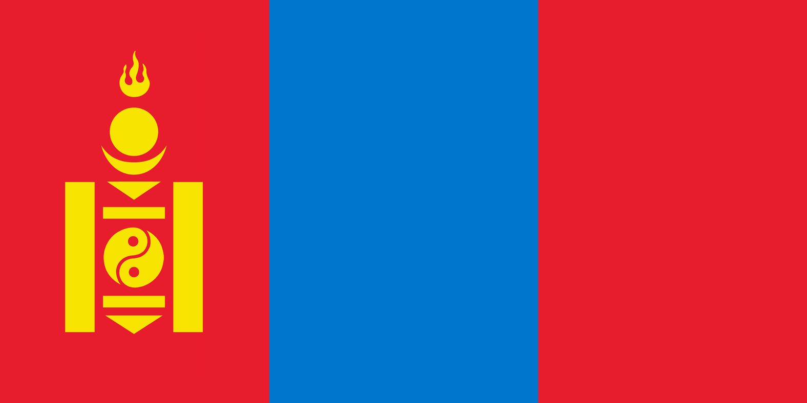
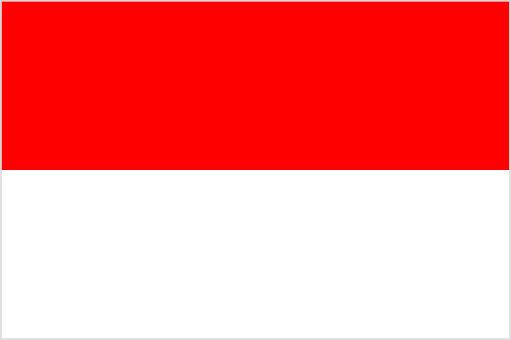

Country Tips
Kazakhstan
- Landscape: Vast and diverse country. Western Kazakhstan is mostly flat steppe and
semi-desert. Central and southern regions continue this pattern with open plains, but the southeast
near Almaty is mountainous (Tian Shan range). Northeastern parts near Pavlodar and Oskemen have
rolling hills and forests. There are desert areas (Kyzylkum, Betpak-Dala), lakes (e.g., Balkhash),
and mountainous terrain near the Kyrgyz and Chinese borders.
- Street View Coverage: Official Street View launched in 2021. Coverage is focused on
major cities like Nur-Sultan (Astana), Almaty, Shymkent, Karaganda, and others. Good coverage along
main roads (especially from Almaty to Bishkek and Astana to Karaganda). Remote areas and secondary
roads still have poor or no coverage. National parks or mountain roads have minimal data.
- Road Signage:
- Highways: Main routes marked with "M" or "A" + number (e.g., M36, A2).
Signs are usually green with white text for major highways, or blue with white text for
regional roads. Kazakh and Russian are both used on signage.
- International/Euroroutes: Some roads are also labeled with E-road numbers
(e.g., E125), though often signed in small letters or inconsistently.
- City Streets: In cities like Almaty or Nur-Sultan, streets are labeled in
Cyrillic (Kazakh and Russian), with occasional Latin transliterations. Common suffixes are
"Проспект" (Prospect/avenue), "Улица" (Ulitsa/street). Examples: "Ул. Абая" (Abay St),
"Проспект Назарбаева".
- Google Street View Car: Typically white Pickup truck
Kyrgyzstan
- Landscape: Extremely mountainous – over 90% of the country lies above 1,500 m.
Dominated by the Tian Shan range, especially in the east and south. Central valleys are high and
rugged, with alpine meadows and snow-capped peaks. The Issyk-Kul region features a large salt lake
surrounded by dramatic mountains. The Fergana Valley in the west is flatter and more agricultural,
though still bordered by hills.
- Street View Coverage: Introduced officially in 2021. Coverage is focused on
Bishkek, Osh, and a few major connecting routes such as the road from Bishkek to Issyk-Kul (e.g.,
via Balykchy), and toward the south near Jalal-Abad. Many rural or mountain roads remain uncovered,
especially remote passes and high-altitude regions.
- Road Signage:
- Highways: National roads are labeled with "ЭМ" (EM) or "М" + number (e.g.,
ЭМ-01, М-41), but signage is inconsistent. Signs are usually blue or white with black or red
text, and often worn or missing in rural areas.
- Highways: most of the roads with streetview are A roads and their names are
"A3XX" (e.g., A365, A363)
- Euroroutes: Some roads also carry E-road numbers (e.g., E007, E010), often
unsigned or minimally marked.
- City Streets: In Bishkek and Osh, street signs are usually in Kyrgyz and
Russian. Common labels are "Улица [Name]" or just "[Name] көчөсү / улица". English
transliterations vary, but names like "Chui Ave" or "Manas Ave" appear on some maps.
- Google Street View Car:You can see roof rack and back mirrors on the car, sometimes
you can see that the car is silverish grey

Mongolia
- Landscape: Vast and sparsely populated. Central and eastern Mongolia are dominated
by open steppe – grassy plains with few trees. The south is desert (Gobi Desert), featuring sand
dunes, rocky canyons, and barren plateaus. The north near Lake Khövsgöl is more forested and
mountainous. The far west (Altai Mountains) is rugged, high-altitude terrain. A country of endless
horizons, few paved roads, and huge skies.
- Street View Coverage: Launched officially in 2014. Coverage is extremely limited
and primarily around the capital **Ulaanbaatar**, plus a few highways radiating out from it (like
towards Darkhan or the airport). Outside Ulaanbaatar, coverage drops off sharply. Most rural roads
are not mapped, especially in the Gobi and western Mongolia.
- Road Signage:
- Main roads: National roads are labeled with "AH" + number (e.g., AH3, AH4),
though signage is rare and often only in larger cities or at major junctions.
- Road conditions: Outside paved roads, you'll often drive on **unmarked dirt
tracks** across the steppe. These may split into multiple paths and rejoin, creating the
classic "Mongolian spaghetti" effect.
- City streets: In Ulaanbaatar, streets are named using Mongolian Cyrillic
(e.g., Энхтайваны өргөн чөлөө = Peace Avenue). On English maps, names like "Peace Ave,"
"Chinggis Ave," or "Narnii Road" are common.
- Google Street View Car:
- AH3 (Ulanbataar - zamyn uul) white car, black "snorkel", red back mirrors, small
spacing between rods on roofrack, and rod on both sides connecting roofrack rods together
- Ulanbataar - straight down to china border small spacing between rods on roofrack,
and rod on both sides connecting roofrack rods together, dark blanket over back of the car. there is
snow around the road and on the road
- north of the country and from ulanbataar to east small spacing between rods on
roofrack, and rod on both sides connecting roofrack rods together, back of the car packed with a lot
of things covered with dark blanket, black snorchel and right side of the car, the car looks to be
dark greyish blue
- from ulanbataar to west white car, black "snorkel" in front right side of the car,
carying things in roof covered in plastic blanket, this camera quality is pretty good tbh

India
- Landscape: Extremely diverse – the north features the Himalayas, with snowy peaks
and winding mountain roads. Central India has forests and plateaus. The Thar Desert dominates
Rajasthan in the northwest. The south has lush tropics, coastal plains, and the Western/Eastern
Ghats (mountain ranges). Northeast India (Seven Sisters) is hilly, jungle-covered, and less
urbanized.
- Street View Coverage: Officially launched in 2022. Coverage is now present in many
major cities (Delhi, Mumbai, Bengaluru, Hyderabad, Chennai, Kolkata) and some secondary cities.
Rural areas and parts of the northeast still lack full coverage. Some national highways are also
covered. Narrow urban alleys may use bikes or scooters.
- Road Signage:
- National Highways (NH): Signed as "NH XX" or "NH-XX" (e.g., NH 44, NH-16).
Usually white on green boards.
- State Highways (SH): Labeled as "SH XX" (e.g., SH 12). Sign styles vary by
state but typically blue or green.
- Urban/Rural roads: Often unsigned or shown only in local script. Street
signs are common in cities, usually blue or green and bilingual (local + English).
- Driving Side: Left-hand traffic.
- Languages & Scripts by Region (with examples):
- North India (Hindi Belt): Uses Devanagari script – हज़रत निज़ामुद्दीन रेलवे
स्टेशन (Hazrat Nizamuddin Railway Station)
- Punjab: Uses Gurmukhi – ਚੰਡੀਗੜ੍ਹ ਰੇਲਵੇ ਸਟੇਸ਼ਨ (Chandigarh Railway Station)
- West Bengal: Uses Bengali script – শিয়ালদহ স্টেশন (Sealdah Station)
- Tamil Nadu: Tamil script – சென்னை மெட்ரோ நிலையம் (Chennai Metro Station)
- Kerala: Malayalam script – തിരുവനന്തപുരം ജംഗ്ഷൻ (Thiruvananthapuram
Junction)
- Karnataka: Kannada script – ಬೆಂಗಳೂರು ಮೆಟ್ರೋ (Bengaluru Metro)
- Telangana/Andhra Pradesh: Telugu script – హైదరాబాద్ జంక్షన్ (Hyderabad
Junction)
- Maharashtra: Marathi (Devanagari script) – मुंबई सेंट्रल (Mumbai Central)
- Gujarat: Gujarati script – અમદાવાદ સ્ટેશન (Ahmedabad Station)
- Northeast (e.g. Manipur, Mizoram): English is often primary, with local
scripts sometimes present.
Bangladesh
- Landscape: Extremely flat and low-lying. Most of the country is part of the
Ganges-Brahmaputra Delta, one of the largest river deltas in the world. You'll often see rice
paddies, muddy rivers, and wet rural environments. The Chittagong Hill Tracts in the southeast are
the only hilly region, with jungle and tribal villages. Very humid and green almost year-round.
- Street View Coverage: Official coverage is rly dense in whole country
- Road Signage:
- National Highways: Often signed as "N" or "NH" + number (e.g., N1, NH2).
Signboards are usually green or blue with white text.
- State Highways: Labeled as "RXXX" and "ZXXXX" (e.g., R360, Z3033).
- City Roads: Named roads in Dhaka often use "Road No." or "Ave No." with
English text, sometimes also Bengali script.
- Signage is very inconsistent outside of urban areas, and road conditions vary widely.
- Driving Side: Left-hand traffic.
- Language & Script:
- Bengali (Bangla) is the official language. Written in Bengali script (বাংলা লিপি).
- Road signs may include transliterations in English. Example: ধানমন্ডি রোড ২৭ (Dhanmondi Road
27)
- Some signs in cities are fully bilingual: English + Bengali script.
Thailand
- Landscape: Thailand has very diverse geography. The **north** is mountainous and forested, especially around Chiang Mai and the Golden Triangle. The **central plains** (e.g., around Bangkok) are flat, agricultural, and densely populated. The **northeast** (Isan) is drier and rural, with a mix of fields and small hills. The **south** is tropical, coastal, and has karst limestone cliffs and islands (e.g., Krabi, Phuket).
- Street View Coverage: Extensive coverage across the country. Most highways and urban areas are covered, including rural villages and tourist routes. Remote forest or border regions may have patchy or no coverage.
- Road Signage:
- National Highways: just numbers on streetview e.g.,
1, 4, 11 or AH and number e.g., AH 2
- Provincial Roads: Numbered like
4010, 3052 (e.g., สบ.1010)
- Urban Streets: Often named in Thai, transliterated as "Thanon [Name]" or just "[Name] Road." In Bangkok and major cities, you'll often see bilingual signage (Thai + English).
- Languages:
- Main language: Thai (ภาษาไทย)
- Script: Thai script only in most rural areas; bilingual (Thai + English) in cities, tourist areas, and major roads.
- Driving Side: Left-hand traffic.

Malaysia
- Landscape: Malaysia consists of two major parts: **Peninsular Malaysia** (West Malaysia) and **East Malaysia** (on Borneo island – Sabah & Sarawak).
- **Peninsular Malaysia**: Lush tropical forests, rolling hills, mountains (e.g., Cameron Highlands), and flat coastal lowlands. Urban and densely populated in the west (Kuala Lumpur, Penang, Johor Bahru).
- **East Malaysia (Borneo)**: More mountainous and heavily forested. Less developed with more rural roads. Known for rainforests, rivers, and indigenous villages.
- Street View Coverage: Very good across West Malaysia – cities, highways, villages, and rural areas. Patchier in East Malaysia (especially in deep Borneo interior), but still exists around major cities like Kuching and Kota Kinabalu, and along main highways.
- Road Signage:
- National Highways: just numbers on streetview e.g.,
1, 4, 11 or AH and number e.g., AH 2
- Expressways (Lebuhraya): Labeled with "E" + number (e.g.,
E1, E2)
- Federal Roads: Labeled with numbers only (e.g.,
1, 3, 5)
- State Roads: Format is one or two letters (state code) + number (e.g.,
J32 in Johor, P14 in Penang, K6 in Kedah)
- In cities: Roads often have bilingual signage (Malay + English). Major roads typically follow the format "Jalan [Name]" (e.g., Jalan Ampang, Jalan Raja Chulan).
- Languages:
- Main language: Malay (Bahasa Melayu)
- Script: Latin alphabet used for road signs and place names.
- Driving Side: Left-hand traffic.

Indonesia
- Landscape: Extremely diverse – spread over more than 17,000 islands. The largest and most populated islands are **Java**, **Sumatra**, **Sulawesi**, **Kalimantan (Borneo)**, **Bali**, and **Papua**.
- Java: Volcanic mountains, rice terraces, and urban sprawl. Densely populated with large cities (Jakarta, Surabaya).
- Sumatra: Mountains (Barisan range), jungles, and palm plantations. Less developed than Java.
- Sulawesi: Rugged terrain, mountainous and tropical with winding roads.
- Borneo (Kalimantan): Mostly rainforest, rivers, and logging roads. Sparse population.
- Bali: Volcanic interior with lush vegetation, and dense settlements along the coasts. Well-developed roads.
- Papua: Very remote, mountainous, and rainforest-heavy with minimal infrastructure outside cities like Jayapura.
- Street View Coverage: Good in urban areas and major roads on Java, Bali, Sumatra, and some parts of Sulawesi and Kalimantan. Coverage in Papua is extremely limited. Village and jungle roads often not mapped. Some islands have zero coverage.
- Road Signage:
- National Roads: Labeled with a simple **number** (e.g.,
1, 3, 6), often in **black text on white** rectangle signs.
- Toll Roads (Jalan Tol): Use green signage. Highways like
Jagorawi or Semarang Toll. Well-developed around Jakarta and Java.
- Provincial Roads: Sometimes marked with "Jalan Provinsi" or local numbering. Less standardized – signage quality varies.
- Urban Roads: Often named "Jalan [Name]" (e.g.,
Jalan Merdeka, Jalan Raya Bogor).
- Driving Side: Left-hand traffic.
Cambodia
- Landscape: Mostly flat lowlands and rural landscapes. The central area around the Mekong River and Tonlé Sap Lake is densely populated and agricultural. The east and west regions are more hilly and forested, including the Cardamom Mountains and Dangrek range. The southern coastline along the Gulf of Thailand is tropical and less developed.
- Street View Coverage: Officially launched in 2014. Best coverage is around the capital **Phnom Penh**, tourist areas like **Siem Reap** (home of Angkor Wat), and along main highways toward Thailand and Vietnam. Many rural areas remain uncovered or only partially covered.
- Road Signage:
- National Roads: Labeled as
NR1, NR5, etc. Often signed "National Road" or abbreviated as "NR" on maps.
- Provincial Roads: Less standardized, sometimes unsigned. May be indicated only by red-white roadside markers or local signs.
- City Roads: In Phnom Penh and larger cities, streets are often numbered (e.g.,
Street 240, Street 51) or named after national figures or events.
- Language and Script: Street signs are written in **Khmer script**. Latin script is occasionally used in tourist zones (e.g., "Angkor Wat →"), but most local signs use only Khmer.
- Driving Side: Right-hand traffic.
Philippines
- Landscape: The Philippines is an archipelago of over 7,000 islands with a very diverse landscape. The larger islands (Luzon, Mindanao, Samar) have mountainous interiors, tropical forests, volcanoes (e.g., Mayon, Taal), and coastal lowlands. Many rural areas are agricultural, with rice paddies and coconut plantations. Urban areas, especially around **Metro Manila**, are dense and chaotic.
- Street View Coverage: Street View is officially available and fairly widespread in cities, major roads, and tourist destinations. The best coverage is around **Manila**, **Cebu**, **Davao**, **Baguio**, and **Iloilo**. Rural areas, especially smaller islands, often have no coverage.
- Road Signage:
- National Highways: Labeled with **N + number** (e.g.,
N1, N7, N850). Signs are usually white text on a blue background or white signs with a black border and the number inside a shield.
- Expressways: Marked with **E + number** (e.g.,
E1 for North Luzon Expressway, E2 for South Luzon Expressway). These have green signage similar to US Interstate/European style.
- City Streets: In urban areas, streets are named (e.g.,
Commonwealth Avenue, Roxas Blvd). Smaller roads may be numbered or have local barangay (village) names.
- Directional Signs: Often bilingual: English and **Filipino (Tagalog)**. Most signs use Latin script. English is dominant in urban signage, while Filipino appears more in rural areas and official labels.
- Driving Side: Right-hand traffic.
Japan
- Landscape: Japan is highly mountainous with narrow coastal plains. The interior is dominated by forested mountains (e.g., Japanese Alps), while the coasts host dense urbanization. Agricultural plains like those near Niigata or the Kantō region are relatively flat. Volcanic features and rivers are common.
- Street View Coverage: Very extensive. Even small villages, forest roads, and mountain paths are covered. Remote islands and hiking trails sometimes included.
- Road Signage:
- National Routes: Labeled with a white shield and a number (e.g.,
1, 23), blue background signs.
- Expressways: Marked with green signage and route names (e.g.,
Tōmei Expressway, Kan-Etsu Expressway), sometimes labeled with E-numbers (e.g., E1, E17).
- Prefectural Roads: Blue hexagonal shields with white numbers (e.g.,
県道 123).
- City Streets: Usually named but rarely signed. Navigation relies heavily on landmarks and major roads.
- Signs often bilingual: Japanese and English, especially in urban or tourist areas.
- Driving Side: Left-hand traffic.

Hong Kong
- Landscape: Very hilly and mountainous with dense urban areas on narrow coastal strips. The New Territories feature rural roads and forested hills. The islands (like Lantau) are more relaxed and natural.
- Street View Coverage: Very good in urban areas: Kowloon, Hong Kong Island, New Territories. Rural areas have decent coverage as well. Private roads and tunnels are not always included.
- Road Signage:
- Main roads: Routes labeled with
Route 1, Route 3, etc. White text on blue background.
- City streets: Often named with English and Chinese (e.g.,
Des Voeux Rd Central / 德輔道中).
- All signs are bilingual: Traditional Chinese and English.
- Road signs follow British system (e.g., font, layout, warning triangles).
- Driving Side: Left-hand traffic.
Taiwan
- Landscape: Mountains dominate the central and eastern parts (e.g., Central Mountain Range), while the west is flat and heavily populated. The east coast is scenic and rugged. Inland is often forested or agricultural.
- Street View Coverage: Very good in urban and suburban areas like Taipei, Taichung, and Kaohsiung. Eastern mountain roads and rural regions have spottier coverage, but main roads are usually included.
- Road Signage:
- National Highways: Numbered and marked with red shields (e.g.,
1, 3), for major intercity routes.
- Expressways: Green signage, often labeled with
Freeway or 國道.
- Provincial Roads: Labeled with blue shields (e.g.,
台9線, meaning "Taiwan Route 9").
- City roads: Often labeled by district and road name (e.g.,
忠孝東路 = Zhongxiao East Rd).
- Signs are usually bilingual: Traditional Chinese and English.
- Driving Side: Right-hand traffic.